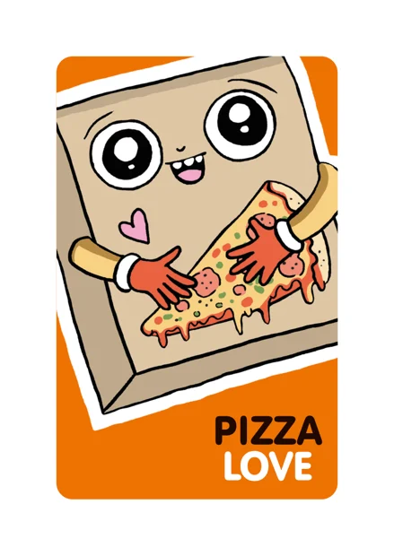
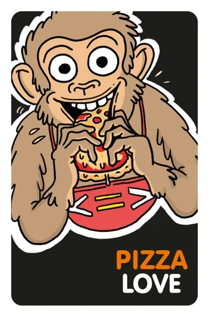
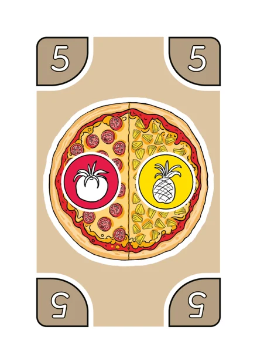
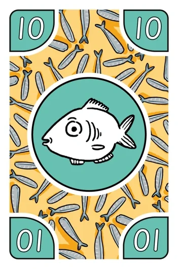
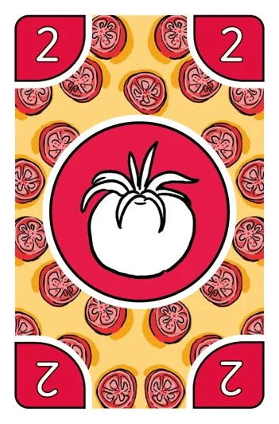

Kartová hra Pizza Love®
Tri hry s jedným balíčkom. Začnite s Pizza Party – naučíte sa ju najrýchlejšie.
- 2–5 hráčov
- od 6 rokov
- 42 kariet pízz
- 58 kariet prísad
- 5–15 min
Ako sa pripravuje pizza
Všetky tri hry používajú to isté základné pravidlo. Naučte sa ho ako prvé.

Karty pízz
Na karte pizze je pizza s jednou až štyrmi rôznymi prísadami. Hodnota pizze (1–10) je v rohoch karty. V hre je 10 srdcových pízz s hodnotou 10.

Karty prísad
Na karte prísady je jedna prísada. Hodnota prísady (1–10) je v rohoch karty. 3 fantazijné prísady (X) môžu byť akoukoľvek prísadou.
Základné pravidlo
Karty pízz sú vždy na stole. Pripravujú sa kartami prísad, ktoré máte v ruke.
Hodnota pizze
Pripravte pizzu z vlastných kariet prísad a nahlas povedzte výpočet, ktorý dá hodnotu pizze. Všetky výpočty sú povolené a dajú sa kombinovať, ak sa výsledok rovná hodnote pizze. Napríklad 5 = 10 : 2.
Príklad: pizza s paradajkou a ananásom

=
:
Hodnota pizze je 5. Môžete ju pripraviť z akýchkoľvek kariet prísad, ak výpočet dá 5: napríklad 4 + 1, 6 – 1, 2 + 3 alebo 10 : 2.
Dva spôsoby, ako pripraviť pizzu
Jednoduchší spôsob
Pizzu môžete pripraviť z ľubovoľného počtu kariet prísad, aj z jednej. Použite ho, keď hráte Pizza Party prvýkrát alebo s malým dieťaťom.
Spôsob opice Basso
Použite toľko rôznych prísad, koľko prísad má pizza. Kariet môže byť viac: pizzu s paradajkou a ananásom (hodnota 5) pripravíte aj z dvoch paradajok a jednej olivy, 2 + 2 + 1 = 5, pretože sú to dva rôzne druhy prísad. Použite ho v hre Pizza Basso alebo ako výzvu navyše v Pizza Party.
V tlačených pravidlách je ešte „toľko kariet prísad, koľko prísad má pizza“. Nový spôsob dáva hre viac možností.
Bruno alebo Basso? Opica v hre sa teraz volá Basso. V starších pravidlách a videách sa volá Bruno a druhý spôsob hry sa volá Pizza Bruno. Pravidlá sú rovnaké.
Tri spôsoby hry
Otvorte spôsob hry a uvidíte jeho pravidlá a videá.
#1Pizza PartyNajľahší začiatok, rýchla a živá · asi 5 min
Videá
Cieľ
Hráči súťažia v príprave pízz. Vyhráva ten, kto pripraví najviac pízz, kým sa neminú karty pízz alebo prísad.
Príprava hry
- Zamiešajte karty pízz a položte ich na kôpku tak, aby na ňu všetci dosiahli.
- Zamiešajte karty prísad a každému hráčovi rozdajte 5. Zvyšné tvoria dobierací balíček. Hráči si môžu pozrieť svoje karty.
Začiatok hry
Otočte prvú kartu pizze lícom nahor vedľa kôpky. Všetci hráči sa hneď snažia pripraviť túto pizzu zo svojich kariet prísad.
Priebeh hry
- Hrá sa bez ťahov: všetci sa snažia pripravovať pizze naraz.
- Najrýchlejší hráč, ktorý pizzu pripraví, si vezme kartu a odloží ju pred seba.
- Použité karty prísad idú z hry von. Dobierajte nové, kým nemáte v ruke opäť 5 kariet.
- Hneď otočte novú kartu pizze. Pokračujte, kým sa neminú karty pízz alebo prísad a nikto už nevie pripraviť pizzu.
Ak sa pizza nedá pripraviť
Ak nikto nevie alebo nechce pripraviť pizzu na stole, otočte na ňu novú kartu pizze. Hráč, ktorý pripraví ďalšiu pizzu, si vezme všetky pizze na stole.
Body a víťazstvo
Body závisia od toho, ako pripravujete pizze:
- Z ľubovoľných prísad: obyčajná pizza = 1 bod, srdcová pizza = 2 body.
- Spôsobom opice Basso: pizza má toľko bodov, koľko má prísad, a srdcová pizza dáva jeden bod navyše. Napríklad pizza s paradajkou a ananásom = 2 body.
Kolo vyhráva hráč s najviac bodmi. Dohodnite sa, koľko kôl hráte – napríklad celú hru vyhrá ten, kto prvý vyhrá 3 alebo 5 kôl.
Pizza Party na ťahy
Môžete hrať aj na ťahy, aby mal každý hráč počas svojho ťahu čas premýšľať.
Voliteľné pravidlá
Môžete sa dohodnúť na pravidlách, ktoré obmedzujú výpočty, napríklad:
- hrá sa len so sčítaním a odčítaním
- v každej pizze musí byť násobenie alebo delenie.
#2Pizza BassoPokojná a napínavá · asi 7 min
Videá
V starších pravidlách: Pizza Bruno.
Cieľ
Hráči sa snažia zbaviť všetkých svojich kariet prísad. Kto to dokáže prvý, vyhráva kolo.
Pozor: Pizze sa pripravujú spôsobom opice Basso: použite toľko rôznych prísad, koľko prísad má pizza. Kariet môže byť viac, napríklad dve olivy.
Príprava hry
- Zamiešajte karty pízz a položte ich na kôpku tak, aby na ňu všetci dosiahli.
- Zamiešajte karty prísad a každému hráčovi rozdajte 7. Zvyšné tvoria dobierací balíček. Hráči si môžu pozrieť svoje karty.
Začiatok hry
Otočte prvú kartu pizze lícom nahor vedľa kôpky. Začína hráč, ktorý naposledy jedol pizzu.
Priebeh hry
Hráči sa na ťahu striedajú a snažia sa pripraviť pizzu na stole zo svojich kariet prísad.
A) Ak sa vám to podarí: použité karty prísad dajte z hry von a z kôpky otočte novú kartu pizze na tú starú. Ťah prechádza na ďalšieho hráča.
B) Ak pizzu neviete alebo nechcete pripraviť: dobierte jednu kartu prísady. Ťah prechádza na ďalšieho hráča.
C) Posledná karta: keď vám zostane jediná karta prísady, správajte sa ako hladná opica Basso a zakričte: „PIZZAAA!“
Ak sa minú karty prísad
Zamiešajte odložené karty prísad do nového dobieracieho balíčka a pokračujte.
Body a víťazstvo
Kolo vyhráva hráč, ktorý sa prvý zbaví všetkých kariet prísad. Spočítajte hodnoty kariet, ktoré zostali ostatným hráčom v ruke – súčet sú víťazove body. Obyčajné prísady sa rátajú podľa hodnoty (1–10), fantazijná prísada za 20.
Kto prvý dosiahne 100 bodov, vyhráva a získava titul Pizza Basso – skutočná pizzová opica.
Kratšia hra
Môžete sa dohodnúť, že hra skončí napríklad pri 30 alebo 50 bodoch, alebo že celú hru vyhrá ten, kto prvý vyhrá 3 alebo 5 kôl.
#3Pizza LoveNajtaktickejšia a najnáročnejšia, od 8 rokov · asi 15 min
Cieľ
Hráči sa snažia pripraviť všetky svoje pizze skôr ako ostatní. Kto to dokáže prvý, vyhráva.
Pozor: Teraz rozhodujú prísady: pizzu môžete pripraviť len zo správnych prísad.
Príprava hry
- Zamiešajte karty pízz a každému hráčovi rozdajte 8. Hráči si ich položia pred seba na kôpku rubom nahor a vrchnú kartu otočia lícom nahor.
- Do stredu stola položte jednu kartu pizze lícom nahor ako výmennú pizzu. Zvyšné karty pízz dajte z hry von.
- Zamiešajte karty prísad a položte ich na stôl ako dobierací balíček.
Sklad
Každý hráč má 4 miesta v sklade. Karty prísad v sklade ležia lícom nahor. Môžete ich používať na svoje pizze rovnako ako karty v ruke a ostatní hráči ich môžu použiť na výmeny.
Začiatok hry
Začína hráč, ktorý naposledy jedol pizzu, a dobierie si do ruky 5 kariet prísad.
Priebeh hry
- Dobierajte karty prísad, kým nemáte v ruke 5 kariet.
- Skúste pripraviť vrchnú pizzu svojej kôpky z kariet v ruke a v sklade.
- Karty vo svojom sklade môžete pomocou výpočtov vymeniť za karty v sklade iného hráča.
- Raz za ťah môžete vymeniť vrchnú pizzu svojej kôpky za výmennú pizzu v strede. Túto pizzu môžete hneď pripraviť.
- Ťah ukončite tak, že jednu kartu prísady z ruky položíte lícom nahor do svojho skladu.
Príprava pizze
Keď máte potrebné prísady v ruke a/alebo v sklade, pripravte pizzu. Karta pizze a použité karty prísad idú z hry von. Otočte ďalšiu kartu pizze zo svojej kôpky – ak na ňu máte prísady, môžete ju pripraviť hneď.
Srdcová pizza
Keď pripravíte srdcovú pizzu, dajte svoju ďalšiu kartu pizze (bez pozerania) inému hráčovi. Ten si ju dá na spodok svojej kôpky.
Výmena kariet v sklade
Potrebné prísady získate výmenou kariet vo svojom sklade za karty v sklade iného hráča. Výmena sa robí výpočtami: povolené je všetko, ak je výsledok na kartách oboch hráčov rovnaký. Za ťah môžete urobiť viac výmen, ale každá výmena je vždy medzi dvoma skladmi. Kartu pod inou kartou vymeniť nemožno. Získané karty si do skladu uložte v ľubovoľnom poradí.
Plnenie skladu
Ak minete karty v ruke skôr, ako položíte kartu do skladu, dobierte si 5 nových kariet a pokračujte vo svojom ťahu. Miesta v sklade môžete plniť v ľubovoľnom poradí a karty môžete ukladať na seba. Vrchnú kartu treba vždy použiť skôr ako tie pod ňou. Karty v sklade sa po položení nedajú presúvať.
Víťazstvo
Hra končí, keď niektorý hráč pripraví všetky pizze zo svojej kôpky.

Pravidlá v PDF
Všetky tri spôsoby hry po slovensky – dve strany na vytlačenie.

Ďalej: stolová hra Pizza Love®
Ten istý pizzový svet na hracom pláne: pripravte obľúbené pizze krabíc na pizzu a ako prvý nazbierajte 10 rôznych kúskov. Tri spôsoby hry vrátane kooperatívnej.